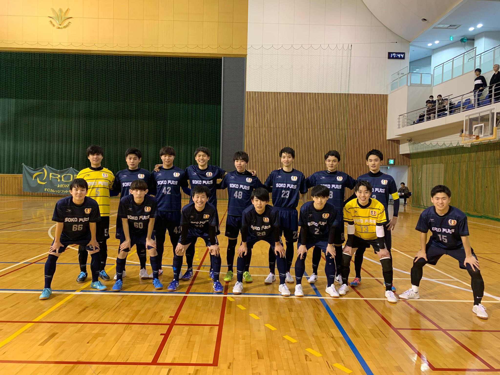

Soka Futs は私が学生時代所属していたフットサルチームです
2019年度 大会実績
- 「FFCカレッジフットサルリーグ第1節」 VS FC primeiro lugar
5-1 - 「FFCカレッジフットサルリーグ第2節」 VS 東京外語大学
9-0 - 「FFCカレッジフットサルリーグ第3節 VS 流通経済大学
7-1 - 「FFCカレッジフットサルリーグ第4節 VS MOMOZA
5-1 - 「FFCカレッジフットサルリーグ第5節 VS Dix-sept
6-0 - 「FFCカレッジフットサルリーグ第6節 VS 東京理科大学
11-1 - 「FFCカレッジフットサルリーグ第7節 VS Viajante
7-2 - 「FFCカレッジフットサルリーグ第8節 VS 帝京大学
6-0 - 「FFCカレッジフットサルリーグ第9節 VS 法政大学
2-3 - 「FFCカレッジフットサルリーグ第10節 VS 早稲田大学
4-1 - 「FFCカレッジフットサルリーグ第11節 VS 学習院大学
0-3